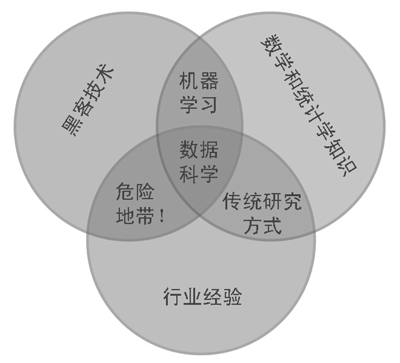
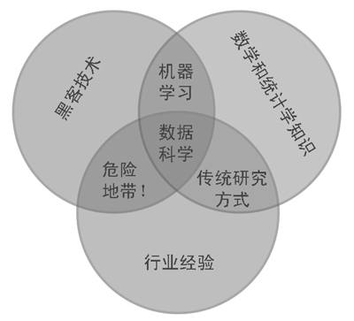

什么是数据科学 (What is data science)
“数据科学是一个跨学科的课题。数据科学综合了三个领域的能力：统计学家的能力——能够建立模型和聚合（数据量正在不断增大的）数据；计算机科学家的能力——能够设计并使用算法对数据进行高效存储、分析和可视化；领域专家的能力——在细分领域中经过专业训练，既可以提出正确的问题，又可以作出专业的解答。”—Jake VanderPlat

“数据科学是一个跨学科的课题。数据科学综合了三个领域的能力：统计学家的能力——能够建立模型和聚合（数据量正在不断增大的）数据；计算机科学家的能力——能够设计并使用算法对数据进行高效存储、分析和可视化；领域专家的能力——在细分领域中经过专业训练，既可以提出正确的问题，又可以作出专业的解答。”—Jake VanderPlat
